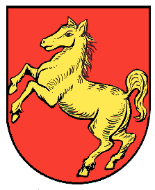

792 years of history. 13.18 km² of territory. One golden horse.
In 1234, when the rest of Europe was busy with crusades and feudal disputes, someone looked at a particularly attractive piece of land in what would become Franconia and said: "Das ist ein schönes Feld." (That is a beautiful field.) And so, Sconfeld was born — a settlement whose very name is a review. Five stars. No notes.
First documented as "Sconfeld." The local nobility names the place after its most notable feature: the field is, indeed, beautiful. They are not wrong.
A Late-Gothic castle is built — two entire buildings. The Schloss Schönfeld begins its centuries-long career of being owned by people whose names you've never heard of.
A man named Seldeneck owns the castle. History does not record what he did there, which is perhaps the most Schönfeld thing imaginable.
Caspar Lerch von Dirmstein takes over the castle. His name sounds important. We assure you, locally, it was.
The Thirty Years' War arrives. The village is destroyed and burned. Schönfeld enters its "phoenix" arc — minus the dramatic rebirth, plus a very slow reconstruction.
Daniel von Rieneck acquires the castle ruins. The ultimate fixer-upper opportunity.
A new church tower is built. The people of Schönfeld celebrate. This is the most exciting thing to happen in 193 years.
Retreating soldiers from the Austro-Prussian War bring cholera. Approximately 60 residents — one-tenth of the population — die in September alone. Schönfeld faces its darkest hour with resilience and sorrow.
The Rappert family erects a 6-meter sandstone cross on a hilltop: the Cholerakreuz. Sculptor Th. Pfeiffer from Wertheim creates flanking statues of Mary and John. The inscription reads: "Es ist vollbracht" (It is finished).
The municipal council officially establishes the coat of arms colors: a golden horse on red. The horse faces left, suggesting it is heading somewhere more exciting. It isn't.
The old church is demolished and replaced with a modernist concrete-and-limestone masterpiece. Architect Manfred Schmitt-Fiebig creates what the locals call "the church" and architecture students might call "a bold statement."
January 1st. Schönfeld loses its independence, absorbed into Großrinderfeld during administrative reforms. A day that lives in local memory. Some say the golden horse on the coat of arms has looked sadder ever since.
For over 740 years, Schönfeld governed itself — through medieval lords, the Electorate of Mainz, wars, plagues, and administrative reshuffles. The village had its own court, its own seal (featuring a horse and flower), and its own undeniable sense of self-importance.
Then came January 1, 1975. Baden-Württemberg's administrative reforms merged Schönfeld into Großrinderfeld. Just like that, 740+ years of sovereignty ended with a bureaucratic pen stroke. The population took it with characteristic Franconian stoicism — which is to say, they have been quietly resentful ever since.
Today, Schönfeld maintains its cultural identity with four thriving associations (for a population of 675, that's approximately one club per 169 residents), its own church, its own castle, and this tourism website — the latest act in a long tradition of soft independence.
Until 1803: Part of the Archbishop-Electorate of Mainz, under the Upper Office of Bischofsheim
1782–1805: Assigned to Königshofen administrative district
From 1975: Part of Gemeinde Großrinderfeld, Main-Tauber-Kreis, Baden-Württemberg
Status: Spiritually independent. Administratively annexed.
Schönfeld's coat of arms features a golden horse on a red background — derived from the village's historic seal, which depicted "a leftward-striding horse and flower" with the inscription "I.G SCHONFELT."
The colors were officially established by municipal council resolution in 1902. Why a horse? Nobody is entirely certain. Perhaps the founder had a horse. Perhaps the horse was the most notable resident. In Schönfeld, we don't question the horse. We honor the horse.
The horse strides to the left, which in heraldic terms is called "sinister." We prefer to interpret it as "heading west toward the sunset," which is considerably more poetic and tourism-friendly.

The official Wappen of Schönfeld — a golden horse on red
Schönfeld's population growth strategy can best be described as "organic" — averaging approximately 2 new residents per year over the past six decades. This is not a housing crisis. This is an exclusivity strategy.
1961: 542 residents
1970: 551 residents (+9 in 9 years — a boom by local standards)
2000: 646 residents
2016: 655 residents
2020: 660 residents
2025: 675 residents
Growth rate: +133 people in 64 years
Density: 51 people per km² (Monaco: 26,337/km²)
Conclusion: 516× more personal space than Monaco
For a community of 675 souls, Schönfeld maintains an impressively dense institutional landscape:
Schönfeld is located in the Federal Republic of Germany, within the Schengen Area. Standard EU/Schengen visa requirements apply. We do not currently operate our own border control, though the Freiwillige Feuerwehr has been known to greet unfamiliar vehicles with curious glances.
Schönfeld does not issue its own visas. We appreciate your enthusiasm. Please consult the German embassy or consulate in your country of residence.
If you are already in Germany: congratulations, you may visit Schönfeld at any time. Just follow the signs from the A81. If there are no signs, that's part of the adventure.
Take the A81 (Würzburg–Stuttgart). Exit at Tauberbischofsheim or Großrinderfeld. Follow local roads approximately 6 km. If you reach Ilmspan, you've gone 1 km too far.
The nearest station is Tauberbischofsheim (~10 km). From there, you'll need a car, bicycle, or an adventurous spirit. There is no bus. This is by design.
Frankfurt Airport (FRA) is approximately 120 km away. Schönfeld does not have an airport. We considered it, but the environmental impact study for a 13.18 km² village seemed excessive.
Schönfeld is connected to the legendary "Liebliches Taubertal" cycling route — one of Germany's most beautiful long-distance bike paths. The 74 km Erlebnistour passes nearby. Arrive sweaty, leave transformed.